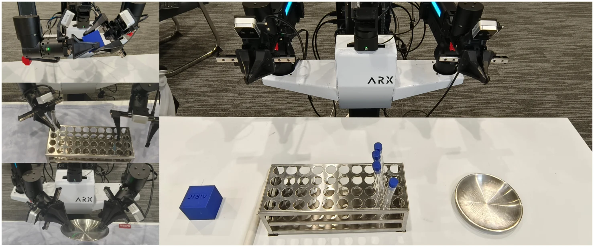

Research
I study how multi-view semantics and 3D geometry can improve visual reasoning and robot manipulation. I am also interested in depth estimation, neural scene representations, and learning predictive world models for embodied agents.
|

View paper figure
|
Yinchen Tian, Huan Li, Muyao Peng, Xi Wang, Yan Wang, You Yang
arXiv preprint, 2026
Paper/PDF/Code/BibTeX
A unified semantic-spatial representation for bimanual manipulation, with cross-view interaction and metric depth repair. MV-Actor achieves 87.8% average success on PerAct2 and is evaluated on a real bimanual robot.
|
Earlier research projects
Depth alignment for few-shot NeRF
Explored mixture-of-experts depth alignment to address nonlinear scale drift across monocular depth estimates, together with uncertainty and depth-continuity constraints. This project is referred to as ADDNeRF in my research work.
Efficient LiDAR and Gaussian scene representations
Worked on geometry-preserving point-cloud downsampling and frequency-guided Gaussian primitive scheduling for efficient 3D reconstruction, in the Lidar2dgs project.
Selected honors
- 2025National First Prize, China University Intelligent Robot Creative Competition
- 2025National Second Prize, China Robot and Artificial Intelligence Competition
- 2025Provincial Second Prize, Hubei College Students Engineering Training Comprehensive Ability Competition
|